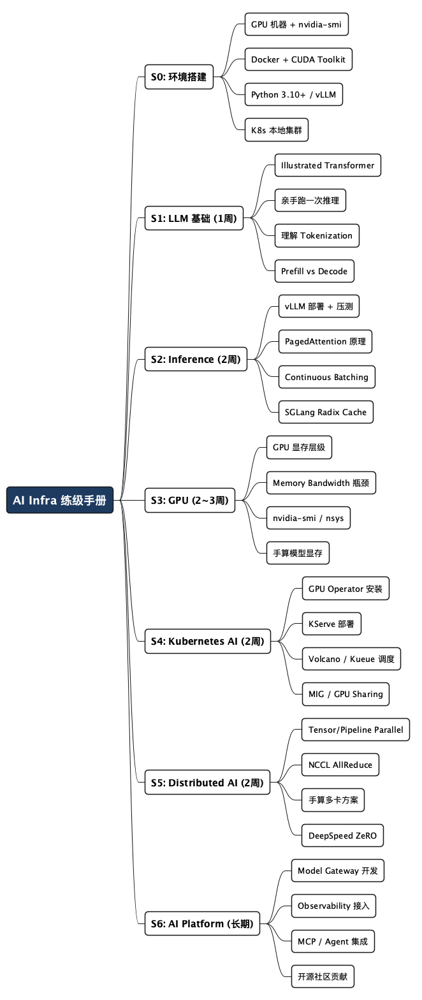

后端工程师的 AI Infra 学习路线
Posted on 四 30 7月 2026 in Tech
| Abstract | 后端工程师的 AI Infra 学习路线 |
|---|---|
| Authors | Walter Fan |
| Category | Tech |
| Status | v1.0 |
| Updated | 2026-07-30 |
| License | CC-BY-NC-ND 4.0 |
后端工程师的 AI Infra 学习路线
最近跟几个做了七八年后端的老朋友聊天，发现一个有意思的现象：大家嘴上说着“AI 要吃掉我们的饭碗”，实际上天天在写 Agent、调 LangChain、接 LLM API，Kubernetes 里跑的是 vLLM，Redis 里存的是 embedding——嘴上说不转型，身体已经很诚实了。
但真正困惑的不是“要不要学”，而是“从哪开始”。
网上一搜，全是《手把手教你手写 Transformer》《CUDA 编程从入门到精通》。我一个写 Go 和 Java 的后端，让我从矩阵乘法开始啃——总感觉哪儿不对。
如果你也是后端/分布式系统出身，那么 AI Infra 这条路你走得比 AI 算法工程师快。 因为 AI Infra 的核心不是模型，是大规模分布式系统 + GPU + 推理服务 + 数据基础设施。
这篇文章是我自己学习 AI Infra 的路线总结。它不是概念索引，而是一份可执行的练级手册——每个阶段你都能知道要看什么、装什么、跑什么，做完什么就算过关。
先搭好你的实验环境
在进入学习之前，先把工具箱准备好。不然学了半天的东西没法动手验证，等于白看。
硬件最低要求： - 一台带 NVIDIA GPU 的机器（RTX 3060 12GB 起步，推荐 RTX 4090 24GB 或云端 A100） - 没有 GPU 的话，先用 Lambda Labs、Vast.ai 或者 RunPod 租一个——几毛钱一小时，比买一张卡划算得多
必装软件清单：
# 1. NVIDIA 驱动 + CUDA Toolkit（推荐 CUDA 12.x）
nvidia-smi # 确认驱动正常
nvcc --version # 确认 CUDA 已装
# 2. Docker + nvidia-container-toolkit
docker run --rm --gpus all nvidia/cuda:12.4.0-base-ubuntu22.04 nvidia-smi
# 3. Python 3.10+ + pip（AI Infra 几乎全是 Python 生态）
python --version # 最好是 3.10 或 3.11
pip install vllm transformers torch # 核心依赖
# 4. Kubernetes 集群（本地用 kind 或 minikube）
brew install kind # macOS
kind create cluster --name ai-infra
# 5. Go / Java（你有基础，直接用你顺手的语言做 Gateway 开发）
go version
推荐的云端 GPU 环境（如果你没有本地 GPU）： - Google Colab Pro+（有免费 T4，付费可用 A100） - Lambda GPU Cloud（按需租，A100 约 $1.10/h） - 公司内部的 GPU 集群（如果有的话）
好了，工具到位了，开始练级。
AI Infra 到底是什么？
先搞清楚定位。很多人以为 AI Infra 就是训练模型，其实大部分公司的 AI Infra 团队，70% 的时间在研究 GPU、Kubernetes、推理引擎、高性能网络、Storage、Scheduler——而不是 Transformer。
flowchart TB
App[Application] --> Agent[Agent / MCP]
Agent --> GW[Model Gateway]
GW --> GPT[GPT]
GW --> Claude[Claude]
GW --> Gemini[Gemini]
GPT --> INF
Claude --> INF
Gemini --> INF
INF[Inference Layer<br/>vLLM / SGLang<br/>TensorRT-LLM / Triton / LMDeploy]
INF --> SCHED[GPU Scheduler<br/>Kubernetes<br/>Volcano / Kueue / Ray]
SCHED --> CLUSTER[GPU Cluster<br/>H100 / B200 / MI300]
简单说：你是给 AI 盖房子的，不是训练 AI 的。你要搞定的问题是——模型怎么跑起来、怎么跑得快、怎么跑得稳、怎么让一千个人同时用还不出事。
第一阶段：LLM 基础（1 周）
目标：能用大白话解释清楚大模型推理的完整流程，而不是只会调 API。
必看资料（按顺序）
| # | 资源 | 类型 | 预期耗时 | 为什么看它 |
|---|---|---|---|---|
| 1 | The Illustrated Transformer | 博客 | 1h | 最好的 Transformer 图解，再无脑入门 |
| 2 | The Illustrated GPT-2 | 博客 | 1h | 从 Transformer 到 GPT 的过渡，理解自回归生成 |
| 3 | LLM Visualization | 交互式 | 30min | 3D 可视化看每个参数怎么流转 |
| 4 | LLM in a Flash | 论文 | 1h | Apple 的论文，讲清显存瓶颈的根因 |
| 5 | Flash Attention 论文 | 论文 | 2h | 只需读 Idea + 算法伪代码，跳过推导 |
动手实验
实验 1：用 Python 从零调一次推理
pip install transformers torch
python3 << 'EOF'
from transformers import AutoModelForCausalLM, AutoTokenizer
import torch
model_name = "Qwen/Qwen2-0.5B-Instruct"
tokenizer = AutoTokenizer.from_pretrained(model_name)
model = AutoModelForCausalLM.from_pretrained(
model_name,
torch_dtype=torch.float16,
device_map="auto"
)
prompt = "解释一下什么是 API Gateway："
inputs = tokenizer(prompt, return_tensors="pt").to(model.device)
# 观察：prompt 长度不同，第一次推理时间的变化
import time
start = time.time()
outputs = model.generate(**inputs, max_new_tokens=100)
print(f"耗时: {time.time() - start:.2f}s")
print(tokenizer.decode(outputs[0], skip_special_tokens=True))
EOF
实验 2：观察 Tokenization
python3 -c "
from transformers import AutoTokenizer
tok = AutoTokenizer.from_pretrained('Qwen/Qwen2-0.5B-Instruct')
text = '什么是 KV Cache？'
tokens = tok.tokenize(text)
ids = tok.encode(text)
print('分词结果:', tokens)
print('Token IDs:', ids)
print('Token 数量:', len(ids))
# 试试中英文混合：中文的 token 效率远低于英文
print('中文:', len(tok.encode('你好世界')))
print('英文:', len(tok.encode('Hello world')))
"
实验 3：理解 GPU 显存占用
# 启动一个 vLLM 服务并观察显存
pip install vllm
python3 -m vllm.entrypoints.openai.api_server \
--model Qwen/Qwen2-0.5B-Instruct \
--gpu-memory-utilization 0.9 &
# 另一个终端观察显存
watch -n 1 nvidia-smi
# 记下启动前和启动后的显存变化——这就是模型权重 + KV Cache 预留的显存
验收标准
你能回答这些问题就算过关： - “给我孙子解释一下 Transformer 的 Attention 在干什么？”（用类比，不用公式） - KV Cache 省了什么？为什么省了它显存反而成了瓶颈？ - 为什么中文推理比英文费 token？（跟 tokenizer 的 BPE 分词有关） - Prefill 和 Decode 两个阶段的瓶颈分别在哪？为什么一个吃算力一个吃显存？
第二阶段：Inference（2 周）
目标：能用 vLLM 和 SGLang 部署生产级推理服务，并解释各项优化的原理和适用场景。
必看资料
| # | 资源 | 类型 | 耗时 |
|---|---|---|---|
| 1 | vLLM 官方文档 | 文档 | 2h |
| 2 | vLLM PagedAttention 论文 | 论文 | 1.5h |
| 3 | vLLM Blog: How Continuous Batching Works | 博客 | 30min |
| 4 | SGLang 官方文档 | 文档 | 2h |
| 5 | SGLang RadixAttention 论文 | 论文 | 1h |
| 6 | vLLM 源码导读 | 源码 | 3h+ |
动手实验
实验 1：vLLM 部署 + 对比不同调度策略
# 启动 vLLM 服务
pip install vllm
python3 -m vllm.entrypoints.openai.api_server \
--model Qwen/Qwen2-7B-Instruct \
--gpu-memory-utilization 0.9 \
--max-model-len 4096 \
--port 8000 &
# 等加载完，用 curl 测试
curl http://localhost:8000/v1/chat/completions \
-H "Content-Type: application/json" \
-d '{
"model": "Qwen/Qwen2-7B-Instruct",
"messages": [{"role": "user", "content": "你好"}],
"max_tokens": 100
}' | python3 -m json.tool
# 压测：对比不同并发下吞吐和延迟
pip install vllm-benchmarks locust
# 用 locust 写一个并发测试脚本，对比 1/4/16/32 并发下的 p50/p99 延迟
实验 2：对比 Continuous Batching 打开和关闭
# 先跑一次带 continuous batching 的（默认开启）
python3 -m vllm.entrypoints.openai.api_server \
--model Qwen/Qwen2-7B-Instruct \
--enable-chunked-prefill \
--port 8001 &
# 用 vLLM 自带的 benchmark 工具压测
python3 -m vllm.benchmarks.serve \
--model Qwen/Qwen2-7B-Instruct \
--dataset-name sharegpt \
--num-prompts 100 \
--endpoint /v1/chat/completions
# 观察日志中的 "Running:" 和 "Waiting:" 数量变化——这就是 continuous batching 在起作用
实验 3：对比 Prefix Cache 开启/关闭效果
# 场景：50 个请求共享同一个 system prompt（典型的 RAG/Agent 场景）
# 启动时开启 prefix caching
python3 -m vllm.entrypoints.openai.api_server \
--model Qwen/Qwen2-7B-Instruct \
--enable-prefix-caching \
--port 8002 &
# 构造 50 个请求，它们共享一段 1000 token 的 system prompt
# 观察开启 prefix cache 后 TTFT (Time To First Token) 的变化
# 预期：TTFT 降低 50%+，因为 prefix 的 KV Cache 被复用
实验 4：SGLang vs vLLM 对比
# 安装并启动 SGLang
pip install sglang[all]
python3 -m sglang.launch_server \
--model Qwen/Qwen2-7B-Instruct \
--port 30000 &
# 用相同的请求分别打 vLLM 和 SGLang
# 重点对比：Agent 多轮对话场景下，SGLang 的 Radix Cache 优势
核心概念自查表
| 概念 | 一句话解释 | 你为什么要懂 |
|---|---|---|
| PagedAttention | KV Cache 像 OS 虚拟内存一样分页管理，解决碎片 | 面试必问，也是理解其他优化的基础 |
| Continuous Batching | 动态批次：请求随时加入/离开，不等齐 | 理解吞吐提升的核心机制 |
| Prefix Cache | 相同 prefix 的 KV Cache 复用 | Agent/RAG 场景的关键优化 |
| Speculative Decoding | 小模型“草稿”，大模型“校对” | 理解延迟优化的上限 |
| Chunked Prefill | 把长 prompt 切片处理，不让算力全被 Prefill 吃掉 | 长上下文场景的必备优化 |
| Multi-LoRA | 一个 base 模型同时服务多个微调适配器 | 多租户推理的经济解法 |
验收标准
- 能独立用 vLLM 部署一个模型服务并压测
- 能解释为什么 32 个并发时吞吐不随并发线性增长（瓶颈在 GPU 显存）
- 能说出 Prefix Cache 和 Radix Cache 的区别和各自适用场景
第三阶段：GPU（2~3 周）
目标：不是写 CUDA Kernel，而是能定位 GPU 推理的性能瓶颈——利用率低怎么回事、OOM 怎么回事、吞吐到顶了怎么回事。
必看资料
| # | 资源 | 类型 | 耗时 |
|---|---|---|---|
| 1 | NVIDIA GPU Architecture Overview | 白皮书 | 1h |
| 2 | How GPU Computing Works (GTC China) | 视频 | 45min |
| 3 | CUDA C++ Programming Guide — Ch1~Ch3 | 文档 | 3h |
| 4 | Understanding the GPU Memory Hierarchy | 博客 | 30min |
| 5 | ZeRO & DeepSpeed: Memory Optimizations | 教程 | 2h |
动手实验
实验 1：理解 GPU 显存层级
# 用 PyTorch 观察内存分配
python3 << 'EOF'
import torch
import time
# 观察 HBM 分配
print(f"总显存: {torch.cuda.get_device_properties(0).total_mem / 1024**3:.1f} GB")
x = torch.randn(10000, 10000, device="cuda")
print(f"10000x10000 float32 占用: {x.element_size() * x.nelement() / 1024**2:.1f} MB")
torch.cuda.synchronize()
print(f"已分配: {torch.cuda.memory_allocated() / 1024**2:.1f} MB")
print(f"已缓存: {torch.cuda.memory_reserved() / 1024**2:.1f} MB")
# GPU 利用率 vs 显存利用率 —— 这是两个概念
# nvidia-smi 里的 "Volatile GPU-Util" 只代表 GPU 核有没有活跃
# 不代表显存带宽有没有打满
EOF
实验 2：Benchmark 显存带宽瓶颈
# 安装并使用 NVIDIA 官方 benchmark 工具
# DCGM (Data Center GPU Manager)
docker run --rm --gpus all nvcr.io/nvidia/k8s/dcgm-exporter:latest
# 或者直接用简单的 PyTorch benchmark
python3 << 'EOF'
import torch
import time
size = 1024 * 1024 * 100 # 100M 元素
x = torch.randn(size, device="cuda")
# 测试显存读取带宽（实际上是在测 HBM bandwidth）
torch.cuda.synchronize()
start = time.time()
for _ in range(100):
y = x * 2
torch.cuda.synchronize()
elapsed = time.time() - start
data_moved = size * 4 * 3 * 100 # 读 x + 读 2(标量) + 写 y，100 次
bandwidth_gb_s = data_moved / elapsed / 1024**3
print(f"实测带宽: {bandwidth_gb_s:.1f} GB/s")
print(f"A100 理论带宽: ~1555 GB/s")
print(f"利用率: {bandwidth_gb_s / 1555 * 100:.1f}%")
EOF
实验 3：分析 vLLM 的显存使用
# 启动 vLLM 并监控显存分布
python3 -m vllm.entrypoints.openai.api_server \
--model Qwen/Qwen2-7B-Instruct \
--gpu-memory-utilization 0.9 &
# 用 nvidia-smi 或 py-spy 观察
pip install py-spy
# 看看到底多少显存给了 KV Cache，多少给了模型权重
# 思考：为什么 "gpu-memory-utilization 0.9" 不等于显存真的用了 90%？
常见性能问题诊断表
| 现象 | 最可能的原因 | 排查命令 |
|---|---|---|
| GPU-Util 低（<30%）但吞吐低 | 显存带宽瓶颈或 host→device 拷贝等待 | nvidia-smi dmon -s pucv |
| GPU-Util 高（>90%）但吞吐低 | 大量时间在做低效的重复计算 | nsys profile 看 kernel 分布 |
| 显存占用 95% 但实际利用率低 | KV Cache 预留太多、没回收 | 检查 vLLM 的 gpu_cache_usage 日志 |
| OOM | Batch 太大或 context 太长 | 减 max-model-len，或者 --gpu-memory-utilization 调低 |
| 多卡推理吞吐不线性增长 | 通信开销（NCCL/PCIe） | nvidia-smi topo -m 看卡间拓扑 |
验收标准
- 能看懂
nvidia-smi和nsys的输出，定位性能瓶颈 - 能解释“为什么 GPU 利用率 95% 但吞吐很低”的技术根因
- 能手算一个 7B 模型在 FP16 下最低需要多少显存（权重 14GB + KV Cache 可变）
第四阶段：Kubernetes AI（2 周）
目标：能把 AI 推理服务像普通微服务一样在 K8s 上部署、扩缩容、金丝雀发布。
必看资料
| # | 资源 | 类型 | 耗时 |
|---|---|---|---|
| 1 | NVIDIA GPU Operator 文档 | 文档 | 1h |
| 2 | KServe 官方文档 | 文档 | 2h |
| 3 | Volcano 调度器文档 | 文档 | 1.5h |
| 4 | Kueue 官方教程 | 文档 | 1h |
| 5 | Ray on Kubernetes | 文档 | 2h |
动手实验
实验 1：K3s + GPU Operator 搭建
# 如果你的机器有 GPU
# 1. 安装 K3s（轻量 K8s）
curl -sfL https://get.k3s.io | sh -
# 2. 安装 NVIDIA GPU Operator
helm repo add nvidia https://helm.ngc.nvidia.com/nvidia
helm repo update
helm install --wait --generate-name \
-n gpu-operator --create-namespace \
nvidia/gpu-operator
# 3. 验证 GPU 可用
kubectl describe nodes | grep nvidia.com/gpu
# 应该看到类似 nvidia.com/gpu: 1 的输出
实验 2：KServe 部署 vLLM 推理服务
# 1. 安装 KServe
kubectl apply -f https://github.com/kserve/kserve/releases/latest/download/kserve.yaml
# 2. 创建一个 InferenceService
cat << 'EOF' | kubectl apply -f -
apiVersion: serving.kserve.io/v1beta1
kind: InferenceService
metadata:
name: qwen2-7b
spec:
predictor:
containers:
- name: kserve-container
image: vllm/vllm-openai:latest
args:
- --model
- Qwen/Qwen2-7B-Instruct
- --gpu-memory-utilization
- "0.9"
resources:
limits:
nvidia.com/gpu: 1
EOF
# 3. 等 pod Ready 后测试
kubectl get inferenceservice qwen2-7b
# 拿到 URL 后用 curl 调用
实验 3：Volcano 多任务排队调度
# 安装 Volcano
kubectl apply -f https://raw.githubusercontent.com/volcano-sh/volcano/master/installer/volcano-development.yaml
# 创建 Queue 和两个 vLLM Job，观察优先级调度
# 一个高优推理服务 + 一个低优批处理推理，看 Volcano 怎么排队和抢占
验收标准
- 能从
kubectl apply到模型 Ready 走完整个链路 - 能解释 GPU Operator / Device Plugin / MIG / GPU Sharing 的区别
- 能用 KServe 做模型服务的金丝雀发布
第五阶段：Distributed AI（2 周）
目标：理解多卡推理的并行策略，能选对并行方案并解释为什么。
必看资料
| # | 资源 | 类型 | 耗时 |
|---|---|---|---|
| 1 | Efficient Large-Scale Language Model Training on GPU Clusters | 论文 | 2h |
| 2 | Megatron-LM 论文系列 | 论文 | 2h |
| 3 | NCCL 官方文档 | 文档 | 1h |
| 4 | vLLM Distributed Inference | 文档 | 1h |
| 5 | Ray Serve | 文档 | 2h |
动手实验
实验 1：vLLM 多卡推理
# 7B 模型 + tensor parallel = 2 卡
python3 -m vllm.entrypoints.openai.api_server \
--model Qwen/Qwen2-7B-Instruct \
--tensor-parallel-size 2 \
--gpu-memory-utilization 0.9 &
# 观察 nvidia-smi：两张卡都在做计算
# 思考：通信开销（all-reduce）占了总耗时的多少？
实验 2：理解 NCCL AllReduce
# 用 nccl-tests 实测卡间通信带宽
git clone https://github.com/NVIDIA/nccl-tests.git
cd nccl-tests && make
./build/all_reduce_perf -b 8 -e 128M -f 2 -g 2
# 对比 NVLink 和 PCIe 的带宽差异
# 这就是为什么 A100 用 NVLink 走的比 PCIe 快 5-10 倍
实验 3：四种并行策略的选择练习
拿出一个 70B 模型，手算每种并行方案需要的卡数和通信开销：
| 方案 | 卡数 | 每卡显存 | 通信量 | 适用场景 |
|---|---|---|---|---|
| 纯 Tensor Parallel | 4 | 大 | 高（AllReduce 每层都做） | 单机多卡 |
| 纯 Pipeline Parallel | 4 | 中 | 低（只传中间结果） | 跨节点 |
| TP+PP 混合 | 8 (2×4) | 中 | 中 | 生产标准方案 |
| Expert Parallel (MoE) | 2+ | 最低 | 低（按 token 路由） | MoE 模型 |
验收标准
- 能根据模型大小和可用 GPU 数量，推算出合理的并行方案
- 能解释 TP 和 PP 的区别和各自适用场景
- 实测过 NCCL 的 AllReduce 带宽，知道它为什么可能成为瓶颈
第六阶段：AI Platform（长期）
目标：把前面五个阶段的东西组装成一个对外暴露的 AI 云平台——这是后端工程师的高光舞台。
动手实验
实验 1：用 Go 写一个 Model Gateway
你的后端积累在这里集中变现。一个最简可用的 Model Gateway 包含：
POST /v1/chat/completions
├── Auth (JWT / API Key 鉴权)
├── Rate Limit (按用户/API Key 限流)
├── Model Router (根据请求路由到不同模型后端)
│ ├── GPT-4 → Azure OpenAI
│ ├── Claude → Anthropic API
│ └── Qwen2 → 自建 vLLM 集群
├── Fallback (主模型挂了切备用)
└── Observability (Prometheus metrics + OTEL tracing)
参考实现框架：
// 目录结构
// gateway/
// main.go -- HTTP server
// auth.go -- JWT/API Key middleware
// ratelimit.go -- token bucket / sliding window
// router.go -- model routing logic
// proxy.go -- reverse proxy to upstream
// metrics.go -- Prometheus instrumentation
// 核心路由逻辑伪代码
func (g *Gateway) Route(ctx context.Context, req *ChatRequest) (*Upstream, error) {
// 1. 检查用户配额
if err := g.rateLimiter.Allow(ctx, req.UserID); err != nil {
return nil, ErrRateLimited
}
// 2. 根据 model 名选后端
upstream := g.registry.Resolve(req.Model)
// 3. 如果主后端不健康，走 fallback
if !g.healthChecker.IsHealthy(upstream) {
upstream = g.registry.GetFallback(req.Model)
}
return upstream, nil
}
这个项目做完，你会发现自己过去写的那套微服务、鉴权、限流、可观测性，全都无缝嫁接了过来。
实验 2：接入 Observability
# Prometheus 采集 vLLM 指标
# vLLM 自带 /metrics 端点
curl http://localhost:8000/metrics | grep vllm
# 关键指标：
# vllm:num_requests_running -- 当前正在处理的请求数
# vllm:num_requests_waiting -- 排队等待的请求数
# vllm:gpu_cache_usage_perc -- KV Cache 使用率
# vllm:time_to_first_token_seconds -- TTFT
# vllm:time_per_output_token_seconds -- TPOT
# Grafana dashboard 关注：
# - P50/P99 延迟曲线
# - 吞吐（tokens/s）
# - KV Cache 水位
# - 排队深度（waiting requests count）
实验 3：接入 MCP / Agent
# 让你的 Gateway 支持 MCP 协议（让 Agent 可以调用你的推理服务）
# 参考：https://modelcontextprotocol.io/
# 或者直接用一个现成的 MCP gateway，比如 LiteLLM
pip install litellm[proxy]
litellm --model ollama/qwen2 --port 4000
# LiteLLM 自带 OpenAI-compatible API + 多模型路由 + 成本追踪
验收标准
- 能写出一个可以上生产的 Model Gateway（最少有鉴权 + 路由 + 限流）
- 能在 Grafana 上看到推理服务的核心指标
- 能解释 AI Platform 和普通微服务平台在观测、限流、路由上的异同
练级手册（完整 Checklist）
这是一份可以打印出来贴在显示器旁边的清单。每完成一项就打个勾，直到全线通关。
□ Stage 0：环境搭建
- [ ] 有一台带 GPU 的机器（本地或云端），能跑
nvidia-smi - [ ] 安装了 Docker + nvidia-container-toolkit
- [ ] 安装了 Python 3.10+、vLLM、transformers
- [ ] 有一个本地 K8s 集群（kind/minikube/K3s）
- [ ] 能跑通
docker run --rm --gpus all nvidia/cuda:12.4.0-base-ubuntu22.04 nvidia-smi
□ Stage 1：LLM 基础
- [ ] 读完 The Illustrated Transformer 和 The Illustrated GPT-2
- [ ] 用 Python + transformers 成功加载一个模型并做了一次推理
- [ ] 能手算一个 200 token 中英文文本各自的 token 数量，知道为什么差那么多
- [ ] 能用类比解释 Attention、KV Cache、Token、Embedding 是什么
- [ ] 能解释 Prefill 和 Decode 两个阶段的差异和各自的瓶颈
- [ ] 知道 Flash Attention 为什么快（不从数学推导，从硬件访问角度解释）
□ Stage 2：Inference
- [ ] 用 vLLM 成功部署一个 7B 模型，能通过 OpenAI-compatible API 调用
- [ ] 做过一次压测，对比 1/4/16/32 并发下的 P50/P99 延迟和吞吐
- [ ] 能解释为什么并发提高到某个点后吞吐不再增长
- [ ] 测试过 Prefix Cache 开关对 TTFT 的影响（自己构造共享 system prompt 的场景）
- [ ] 读过 vLLM 的
LLMEngine和Scheduler源码关键路径（至少 500 行） - [ ] 用 SGLang 部署模型，对比和 vLLM 在 Agent 场景下的差异
- [ ] 能用一句话解释 PagedAttention、Continuous Batching、Speculative Decoding
□ Stage 3：GPU
- [ ] 能看懂
nvidia-smi dmon和nvidia-smi topo -m的输出 - [ ] 手算过一个 7B FP16 模型需要多少显存
- [ ] 理解为什么 GPU 利用率 ≠ 吞吐 —— 写过 benchmark 验证
- [ ] 理解 HBM / SRAM / Shared Memory / L1 / L2 这些显存层级
- [ ] 知道 SM / Warp / Tensor Core 是什么，它们怎么协作
- [ ] 实地排查过一次“GPU 利用率低但吞吐也低”的问题
- [ ] 能用 nsys 或 py-spy 给推理服务做过一次 profiling
□ Stage 4：Kubernetes AI
- [ ] 在 K8s 集群上安装了 GPU Operator
- [ ] 用 KServe 成功部署了一个模型推理服务
- [ ] 理解 Device Plugin、MIG、GPU Sharing 的区别
- [ ] 用 Volcano 或 Kueue 配置过多队列、多优先级的 GPU 作业调度
- [ ] 能画出从
kubectl apply到模型 Ready 的完整链路
□ Stage 5：Distributed AI
- [ ] 跑过一次 tensor parallel = 2 的多卡推理
- [ ] 用 nccl-tests 实测过卡间带宽
- [ ] 能手算一个 70B 模型需要的卡数和并行配置
- [ ] 理解 TP / PP / DP / EP 的区别和各自适用场景
- [ ] 知道“NCCL 卡死”的常见原因（网络/拓扑/不匹配的 NCCL 版本）
- [ ] 读过 DeepSpeed ZeRO 的三个 Stage 各自的优化思路
□ Stage 6：AI Platform
- [ ] 用 Go/Java 写了一个 Model Gateway（至少有路由 + 鉴权 + 限流）
- [ ] 为 Gateway 和推理服务接入了 Prometheus 指标采集
- [ ] 在 Grafana 上建了推理服务的核心监控面板
- [ ] 接入过至少一个第三方模型 API（如 Azure OpenAI、Anthropic）做 fallback
- [ ] 理解 MCP 协议的基本设计，能让 Agent 调到你 Gateway 后面的模型
□ 源码阅读进度
- [ ] vLLM：读完了 LLMEngine 和 Scheduler 模块
- [ ] SGLang：读完了 Radix Cache 和 Scheduler 模块
- [ ] KServe：读完了 InferenceService controller 的核心逻辑
- [ ] Ray：读完了 Ray Serve 的调度模型
- [ ] 至少给上面其中一个项目提过 PR 或 issue
时间线建议
以你已有的 Go/Java、Kubernetes、微服务、安全认证和分布式系统经验，建议这样安排：
| 时间 | 阶段 | 重点任务 | 里程碑 |
|---|---|---|---|
| 第 1 周 | S0 + S1 | 搭环境，读完 LLM 基础，跑通第一次推理 | nvidia-smi 能跑，vLLM 能部署 |
| 第 2-3 周 | S2 | 深入 vLLM/SGLang，压测对比，读核心源码 | 能独立调优推理服务的吞吐和延迟 |
| 第 4-5 周 | S3 | GPU 硬件基础，nvidia-smi / nsys profiling | 能定位 GPU 性能瓶颈 |
| 第 6-7 周 | S4 | K8s GPU Operator + KServe + Volcano/Kueue | 能用 YAML 一键部署推理服务 |
| 第 8-9 周 | S5 | Tensor/Pipeline Parallel，NCCL，Ray | 能手算多卡方案并实操验证 |
| 第 10-12 周 | S6 | Model Gateway 开发 + 可观测性接入 | 拿出一个可演示的 AI 平台原型 |
| 第 13+ 周 | 深入 | 精读开源源码，参与社区 | 成为 vLLM/KServe/Ray 的 contributor |
推荐书单
不是“买了就当看了”的那种书单。每本都标注了你为什么要读它。
| 书名 | 作者 | 什么时候读 | 为什么读 |
|---|---|---|---|
| 《大语言模型》 | 赵鑫 等 | Stage 1 | 国内最好的 LLM 中文教材，系统完整 |
| 《CUDA C++ Programming Guide》 | NVIDIA | Stage 3 | 官方文档，读前 3 章就够了 |
| Professional CUDA C Programming | John Cheng | Stage 3 | 如果要做 GPU 优化，这本必读 |
| 《Designing Machine Learning Systems》 | Chip Huyen | Stage 6 | AI 系统设计的工程视角 |
| 《System Design Interview — An Insider's Guide》 | Alex Xu | 全程 | 系统设计面试宝典，AI Infra 面试也覆盖 |
一句话收尾：你不是从零转行，你是换个跑道跑同一场比赛。 分布式系统、调度、网关、可观测性——这些东西你本来就会。AI Infra 不过是给这些技能换了个新的应用场景，然后把 GPU 和推理引擎加进你的工具箱。
全文思维导图
@startmindmap
<style>
mindmapDiagram {
node {
BackgroundColor #F8F9FA
RoundCorner 10
Padding 10
FontSize 13
}
:depth(0) {
BackgroundColor #1E3A5F
FontColor white
FontSize 18
FontStyle bold
}
:depth(1) {
FontSize 15
FontStyle bold
}
:depth(2) {
FontSize 13
}
}
</style>
* AI Infra 练级手册
** S0: 环境搭建
*** GPU 机器 + nvidia-smi
*** Docker + CUDA Toolkit
*** Python 3.10+ / vLLM
*** K8s 本地集群
** S1: LLM 基础 (1周)
*** Illustrated Transformer
*** 亲手跑一次推理
*** 理解 Tokenization
*** Prefill vs Decode
** S2: Inference (2周)
*** vLLM 部署 + 压测
*** PagedAttention 原理
*** Continuous Batching
*** SGLang Radix Cache
** S3: GPU (2~3周)
*** GPU 显存层级
*** Memory Bandwidth 瓶颈
*** nvidia-smi / nsys
*** 手算模型显存
** S4: Kubernetes AI (2周)
*** GPU Operator 安装
*** KServe 部署
*** Volcano / Kueue 调度
*** MIG / GPU Sharing
** S5: Distributed AI (2周)
*** Tensor/Pipeline Parallel
*** NCCL AllReduce
*** 手算多卡方案
*** DeepSpeed ZeRO
** S6: AI Platform (长期)
*** Model Gateway 开发
*** Observability 接入
*** MCP / Agent 集成
*** 开源社区贡献
@endmindmap

本作品采用知识共享署名-非商业性使用-禁止演绎 4.0 国际许可协议进行许可。 欢迎在我的个人网站 https://www.fanyamin.com 访问原文并评论。